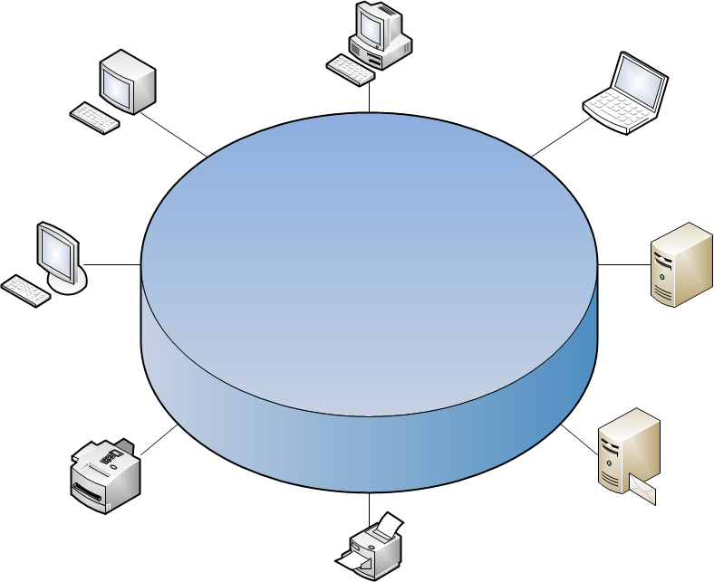

Token ring
Мережі Token Ring (стандарт 802.5), так само як і мережі
Ethernet, характеризує колективне середовище передачі даних, яка в даному випадку складається з відрізків кабелю, що з'єднують усі станції мережі в кільце. Кільце розглядається як загальний ресурс, і для доступу до нього потрібен не випадковий алгоритм, як в мережах Ethernet, а детермінований, заснований на передачі станціям права на використання кільця у визначеному порядку. Це право передається за допомогою кадру спеціального формату, званого маркером, або токеном, . Це тип мережі, в якій всі комп'ютери схематично об'єднані в кільце. По кільцю від комп'ютера до комп'ютера (станції мережі) передається спеціальний блок даних, званий маркером. Коли якій-небудь станції потрібна передача даних, маркер нею модифікується і більше не розпізнається іншими станціями, як спецблок, поки не дійде до адресата. Адресат приймає дані і запускає новий маркер по кільцю. На випадок втрати маркера або передавання даних, у яких немає адресату, в мережі присутня машина із спеціальними повноваженнями, що вміє видаляти безадресні дані і запускати новий маркер.Цей механізм передачі маркера спільно використаний ARCNET, маркерною шиною, і FDDI, і має теоретичні переваги перед стохастичним CSMA / CD Ethernet.
